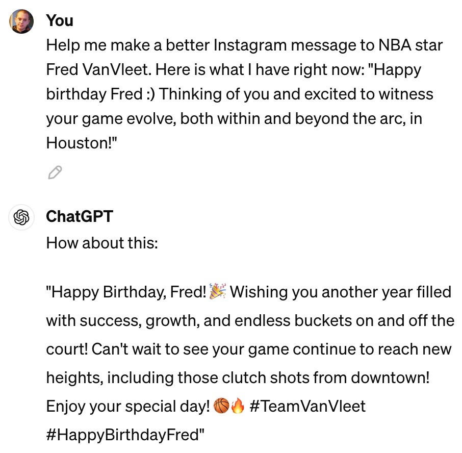
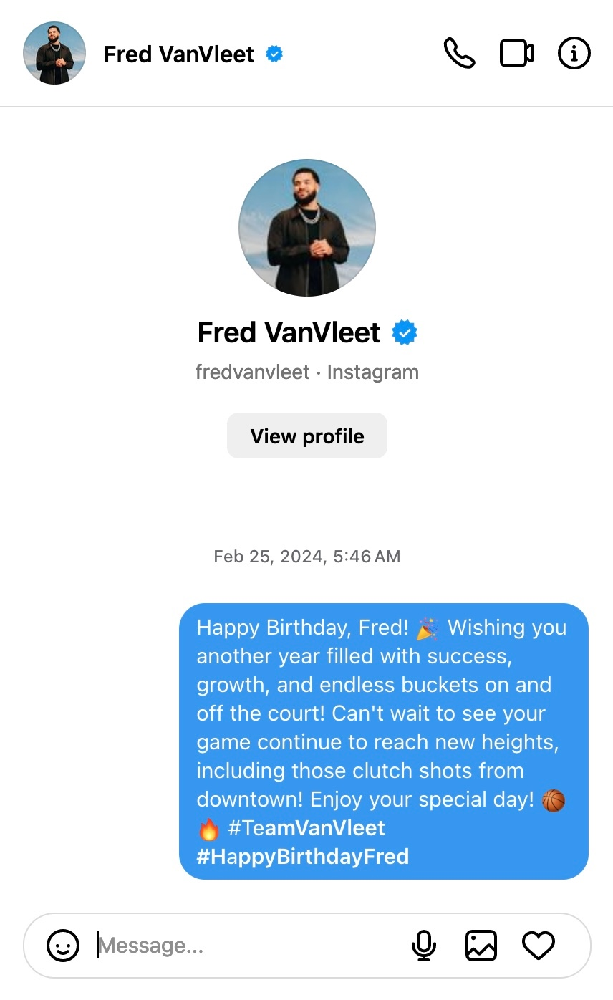

DSAN 5450: Data Ethics and Policy
Spring 2025, Georgetown University
Wednesday, April 23, 2025


Dear Students,
I hope this message finds you well. I am writing to offer a sincere apology for my recent actions during our Data Ethics class, specifically in relation to Fred VanVleet’s birthday greeting.
It deeply pains me to admit that I deviated from the authenticity and sincerity that we aim to uphold in our interactions, particularly when it comes to someone as respected and admired as Fred VanVleet. By using ChatGPT to generate a message instead of expressing genuine sentiments from the heart, I failed not only Fred but also the entire Fred VanVleet community.
Fred VanVleet represents resilience, determination, and integrity, both on and off the court. As a role model to many, he deserves nothing less than our utmost respect and genuine appreciation. My actions not only fell short of these standards but also disrespected the values that Fred embodies.
To the Fred VanVleet community, I extend my deepest apologies. I recognize that my actions have let you down and have tarnished the admiration and support we hold for Fred. It was a despicable lapse in judgment, and I take full responsibility for the disappointment and frustration it may have caused.
“I come from a place where a young thug will take your cake” - Thomas Jefferson
Moving forward, I am committed to learning from this experience and to making amends. I understand the importance of honesty, integrity, and authenticity, especially when it comes to our interactions with individuals we admire and respect.
Once again, I apologize to Fred VanVleet and the entire community for my regrettable actions. Your forgiveness and understanding would mean a great deal to me as I strive to regain your trust.
If any of you would like to discuss this matter further or have any concerns, please do not hesitate to reach out to me. Thank you for your attention to this issue.
Sincerely, [Your Name]
The weight of chains, number of stripes, hardness of labour, and other effects of a master’s cruelty, may make one servitude more miserable than another, but nevertheless, he is a slave who serves the best and gentlest man in the world, as well as he who serves the worst. (Sidney 1698).
Our home has been nothing but a playroom. I have been your doll-wife, just as at home I was papa’s doll-child; and here the children have been my dolls. (Ibsen 1879)
Weakness may gratify the arrogant pride of man; but the lordly caresses of a protector will not gratify a noble mind that yearns, and deserves, to be respected. Fondness is a poor substitute for friendship. (Wollstonecraft 1792)
My feelings [towards slave masters] were not the result of any marked cruelty in the treatment I received; they sprung from the consideration of my being a slave in the first place. It was slavery—not its mere incidents—that I despised. (Douglass 1855)
“I built it with my hands. Straightened old nails to put the sheathing on.”
“It’s not me. There’s nothing I can do. I’ll lose my job if I don’t do it. And look—suppose you kill me? They’ll hang you, and long before you’re hung there’ll be another guy here, he’ll bump the house down. You’re not killing the right guy.”
“That’s so… Who gave you orders? I’ll go after him. He’s the one to kill.”
“You’re wrong. He got his orders from the bank. The bank told him, ‘Clear those people out or it’s your job.’”
“Well, there’s a president of the bank. There’s a board of directors. I’ll fill up the magazine of the rifle and go into the bank.”
The driver said, “Fellow was telling me the bank gets orders from the East. The orders were, ‘Make the land show profit or we’ll close you up.’”
“We’re sorry. It’s not us. It’s the monster. The bank isn’t like a man.
“Yes, but the bank is only made of men.”
“No, you’re wrong there—quite wrong there. The bank is something else than men. It happens that every man in a bank hates what the bank does, and yet the bank does it. The bank is something more than men, I tell you.”
“I got to figure,” the tenant said. “We all got to figure. There’s some way to stop this. There’s got to be some way to stop this. It’s not like lightning or earthquakes. We’ve got a bad thing made by men, and by God, isn’t that something we should be able to change?”
DSAN 5450 Week 14: Republican Liberty